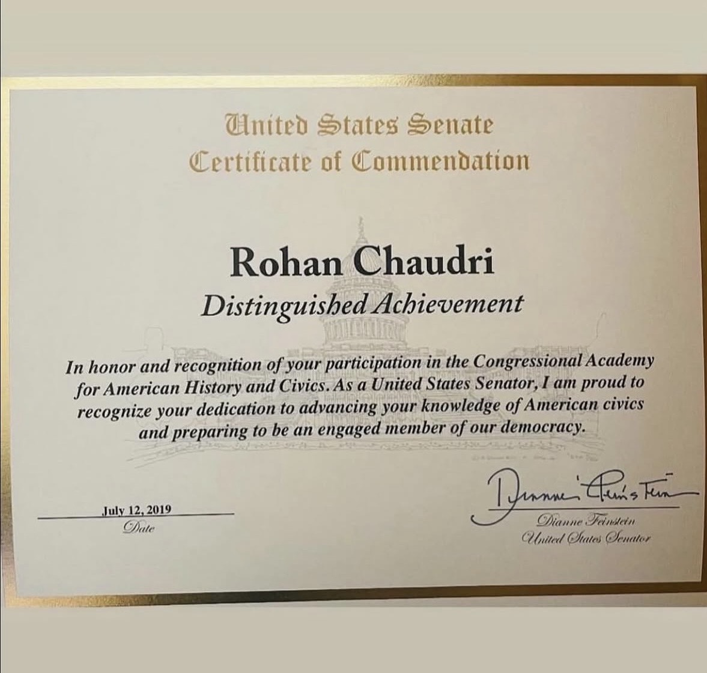
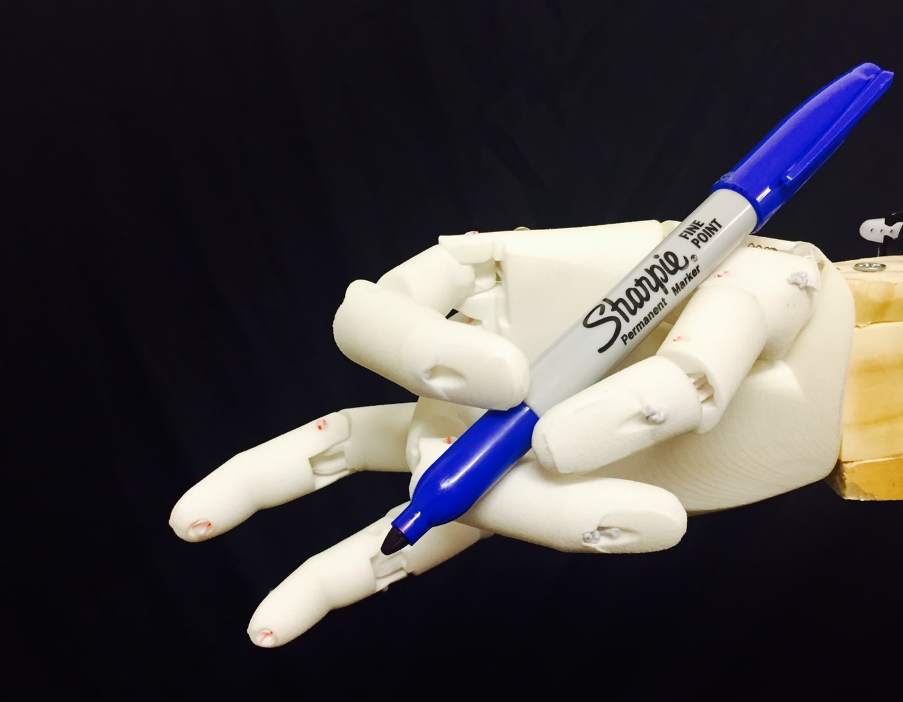
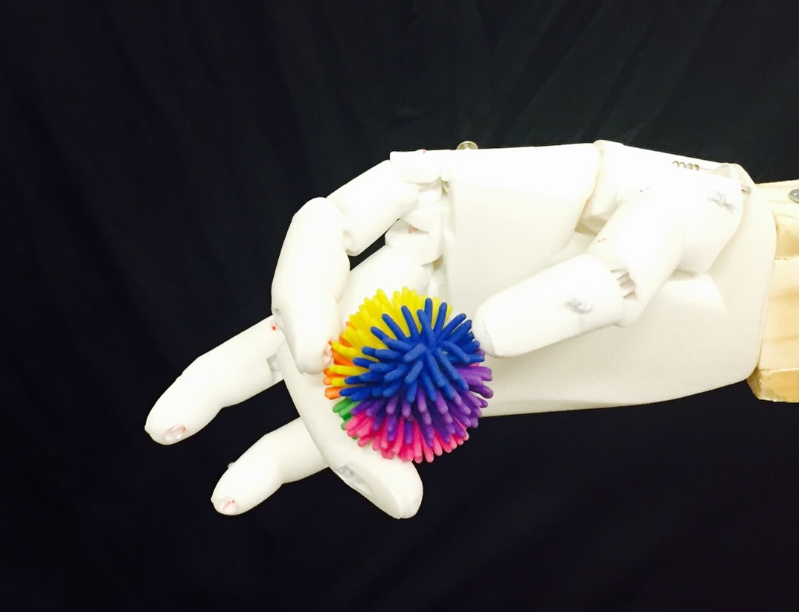
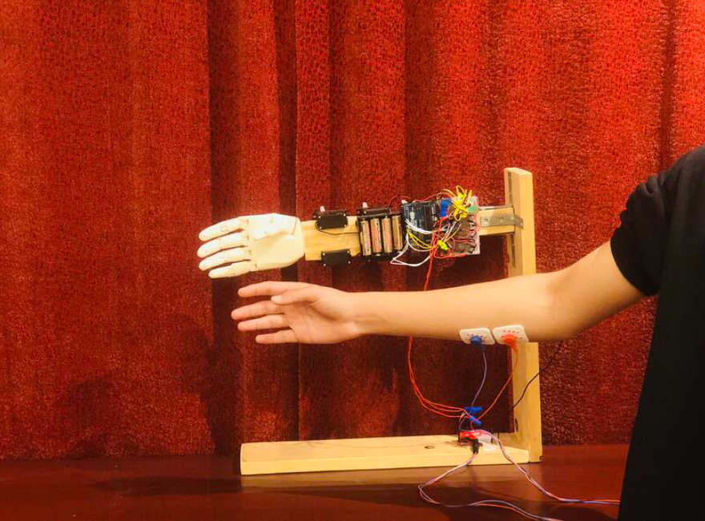

Machine learning systems for conversation, finance, and risk.
I build private LLM and data workflows with a focus on clear requirements and reliable outputs. Recent work includes real-time meeting feedback, CFO and wildfire-risk agents, and a six-year myoelectric bionic hand project.
- Education
- UC Berkeley BA · Georgia Tech MS candidate
- Experience
- 2+ years in AI, analytics, and product
- Technical
- Python, SQL, APIs, FastAPI, Flask, Streamlit, Pandas
- Languages
- English and Mandarin Chinese


United States Senate Certificate of Commendation
Rohan received a United States Senate Certificate of Commendation for Distinguished Achievement in recognition of his participation in the Congressional Academy for American History and Civics. The commendation recognizes dedication to American civics and preparation for engaged democratic citizenship.
The certificate was signed by United States Senator Dianne Feinstein and dated July 12, 2019.
- Recognition
- Distinguished Achievement
- Issuer
- United States Senate
- Program
- Congressional Academy for American History and Civics
- Date
- July 12, 2019
A six-year bionic hand project that connected curiosity, hardware, and machine learning.
Over six years, I developed a myoelectric bionic hand that responds to electrical signals produced when the brain activates forearm muscles. Sensors captured those signals, software interpreted intent, and a 3D-printed hand used motors and tendon-like strings to mirror human hand movement.
How it worked
- Surface muscle-signal sensors mapped intent to precise finger movement.
- Signal processing and intent classification translated electrical activity into grasp commands.
- A 3D-printed chassis, stepper motors, and tendon-like strings recreated core hand mechanics.





Across models, data, and product.
The work sits where implementation details meet product constraints: model behavior, data pipelines, APIs, user interviews, requirements, and technical communication.
Programming & Data
Machine Learning
Product & Systems
Selected evidence.
Real-Time Meeting Coach
Built a private machine-learning pipeline that analyzes more than ten conversation signals in real time and uses current frontier models, including GPT-5.1 and Gemini 3 Pro, for adaptive feedback.
Finance & Risk Agents
Delivered the CFO Agent and Wildfire Risk Agent, production systems that reduced manual analysis time by about 90%.
Academic Strength
Graduated from UC Berkeley with a BA in Data Science and is pursuing a Master of Science in Computational Data Science at Georgia Tech.
Standardized Scores
Earned perfect scores in SAT Math (800) and SAT Biology (800).
Communication
Fluent in Mandarin Chinese and experienced working with scholars, customers, and stakeholders across the United States, Europe, and Asia.
Civic Recognition
Received a United States Senate commendation for Distinguished Achievement through the Congressional Academy for American History and Civics.